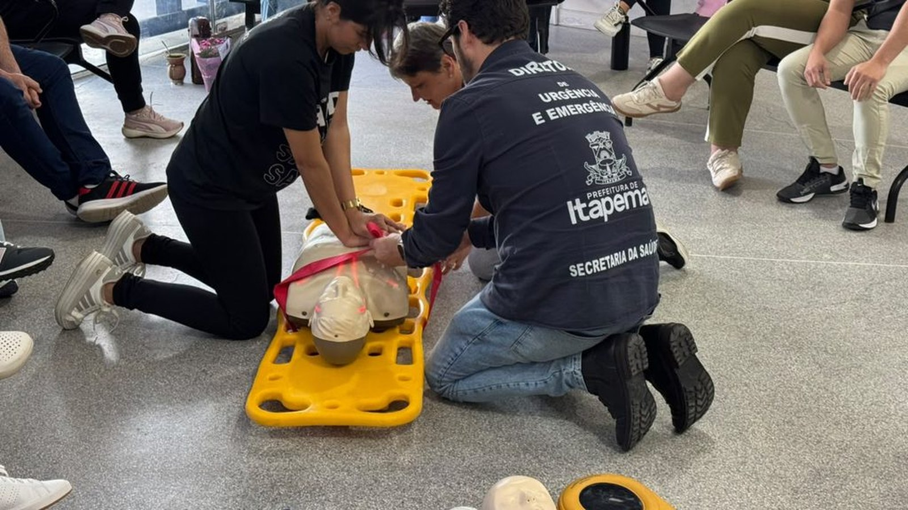

Itapema · Saúde
Itapema · SaúdeSAMU de Itapema recebe mais de R$ 300 mil em equipamento, e o desfibrilador agora cabe na motolância
O equipamento que o SAMU levou para dentro do treinamento das UBSs.
A Prefeitura informou que a equipe da UBS Tabuleiro passou na quinta-feira, 8 de outubro, por um treinamento do SAMU sobre parada cardiorrespiratória, AVC, crise convulsiva e manobra de desengasgo, e que na semana anterior foi a vez da UBS Centro. A nota promete continuidade "nas demais unidades" e não diz quantas são nem até quando. Fomos contar na lista de contatos da própria Secretaria de Saúde: Itapema tem 13 UBSs. Duas passaram pelo treinamento, 11 não. Juntamos também as outras capacitações do ano e montamos a linha do tempo que nenhuma das notas traz.
Em 30 segundos · Modo de Leitura, formato original Santa Informa
O SAMU de Itapema está treinando os postos de saúde.
A ideia é preparar a equipe para emergência dentro da unidade.
Na quinta-feira, 8 de outubro, foi a UBS Tabuleiro.
O treino durou das 13h30 às 15h30.
São 2 horas.
O conteúdo foi bem prático.
Reconhecer parada cardiorrespiratória.
Reconhecer AVC, o derrame.
O que fazer na crise convulsiva.
E a manobra de desengasgo.
A nota diz que a UBS Centro foi na semana anterior.
A data dessa primeira não foi publicada.
E diz que o trabalho segue "nas demais unidades".
Só que não diz quantas são.
Nem até quando.
Fomos contar na lista da Secretaria de Saúde.
Itapema tem 13 UBSs, contagem nossa.
Com Tabuleiro e Centro, deu 2.
Faltam 11.
Esse treino não começou agora.
Em 30 de setembro, o SAMU treinou o CAPS.
Ali o assunto foi crise de saúde mental.
O CAPS não é UBS, é outro serviço.
Antes disso teve uma capacitação maior.
Foi em 8 de junho, na Paróquia Santo Antônio.
Era Suporte Básico de Vida, adulto e infantil.
Quem deu foi o NEU, núcleo do estado.
Entre aquele dia e o de agora, 122 dias.
Entre o CAPS e o Tabuleiro, 8 dias.
Nenhuma nota diz quantas pessoas foram treinadas.
Nenhuma diz se cada UBS tem desfibrilador.
Vale lembrar o horário dos postos.
3 das 13 atendem até as 22h.
As outras 10 fecham às 17h.
Emergência de verdade continua sendo o 192.
É o telefone do SAMU, 24 horas, de graça.
Poder PúblicoPublicada em Redação Santa Informa

Uma pessoa pode cair dura na sala de espera de um posto de saúde. Pode engasgar, pode ter uma convulsão, pode chegar com o lado do corpo dormente. É para esses minutos que o SAMU de Itapema está passando de unidade em unidade. Na quinta-feira, 8 de outubro, das 13h30 às 15h30, foi a vez da equipe da UBS Tabuleiro, que treinou parada cardiorrespiratória, AVC, crise convulsiva e desengasgo. A nota da Prefeitura diz que na semana anterior o treinamento tinha sido com a UBS Centro, e que o trabalho continua "nas demais unidades de saúde". Quantas são essas demais, a nota não diz. Fomos contar na lista de contatos da Secretaria de Saúde: Itapema tem 13 UBSs. Duas já passaram, 11 ainda não.
O treino cobriu quatro situações de pressa: reconhecer os sinais de parada cardiorrespiratória, reconhecer os sinais de AVC, cuidar de quem está em crise convulsiva e aplicar a manobra de desengasgo. A ideia é que o profissional identifique o quadro, comece os primeiros cuidados e acione o socorro certo. O diretor de Urgência e Emergência, Marcelo Fabra, resumiu assim: "As UBSs recebem diariamente pessoas com diferentes condições de saúde e uma emergência pode acontecer a qualquer momento". Ele diz que a intenção é passar por todas as unidades.
Cada nota conta um pedaço. Lendo as três que a Prefeitura publicou, dá para montar a sequência inteira. Em 8 de junho, uma segunda-feira, médicos, enfermeiros e técnicos da Atenção Básica fizeram um curso de Suporte Básico de Vida para adulto e criança, na Paróquia Santo Antônio, dado pelo Núcleo de Educação em Urgências de Santa Catarina, com certificado no fim. Em 30 de setembro, uma quarta, o SAMU treinou a equipe do CAPS para crise de saúde mental, que é outro serviço, não uma UBS. Depois veio a UBS Centro, sem data publicada, e agora o Tabuleiro. Entre o curso de junho e o treino de quinta passaram 122 dias, e entre o do CAPS e o do Tabuleiro, 8 dias, contas nossas.
Das 13 UBSs da cidade, só 3 atendem até as 22h: Alto São Bento, Dr. Gastão e Meia Praia I. As outras 10 fecham às 17h. Isso quer dizer que a maior parte das unidades tem uma janela curta de funcionamento, e é dentro dela que a equipe treinada faz diferença. Fora desse horário, e em qualquer caso grave, o caminho continua sendo o 192, o telefone do SAMU, que atende de graça 24 horas por dia. A base do SAMU em Itapema fica na Rua 708 A, 808, anexa ao Hospital Santo Antônio.
O resumo de 30 segundos está no topo e a versão completa é o texto acima. Aqui ficam as três leituras da casa sobre o mesmo assunto.
Clara, a otimista
Tem uma coisa bonita nesse treinamento e é o lugar onde ele acontece. O SAMU não chamou todo mundo para um auditório longe de casa. Ele foi até a UBS, no horário de trabalho, com boneco no chão e prancha de verdade. Quem vai usar aquilo aprendeu no mesmo piso onde a emergência pode acontecer.
E o conteúdo é o que mais salva vida no mundo real: parada cardíaca, AVC, convulsão e engasgo. Nada de teoria bonita. São quatro coisas que acontecem em sala de espera de posto de saúde, e agora a equipe do Tabuleiro e a do Centro sabem o que fazer nos primeiros minutos. Se a secretaria mantiver o ritmo, a cidade inteira ganha isso até o fim do ano.
Seu Prudêncio, o criterioso
Merece atenção o tamanho da fila. A nota fala em seguir "nas demais unidades", e quem lê imagina que falta pouco. Fomos contar: são 13 UBSs e duas foram atendidas. Faltam 11. Não é crítica ao trabalho, é só a escala que a nota deixou de fora e que muda a leitura de quem acompanha.
O outro ponto é a medida. Nenhuma das três notas diz quantos profissionais participaram, e sem isso não dá para saber se a equipe inteira da unidade foi treinada ou se foram cinco pessoas de um turno só. Uma sugestão útil seria publicar o número de participantes e um cronograma simples das unidades restantes. Custa pouco e deixa qualquer um conferir o avanço.
Dito isso, a direção está certa e precisa ser reconhecida. Levar o SAMU para dentro da atenção básica alinha procedimento entre quem socorre e quem acolhe todo dia, e isso costuma aparecer na qualidade do atendimento antes de aparecer em qualquer indicador. A ressalva aqui é de divulgação, não de execução.
Caco, o sarcástico
Li que o treinamento vai continuar "nas demais unidades" e fiquei curioso para saber quantas são essas demais. Abri a página de contatos da própria Prefeitura e contei nos dedos, que é uma tecnologia de ponta: 13. Duas feitas, 11 na fila. Pronto, resolvido o mistério, e sem precisar de nota.
Reclamação registrada: ninguém diz quanta gente foi treinada. Pode ter sido a unidade inteira, pode ter sido meia dúzia. Também não sei se o posto perto da minha casa tem desfibrilador, e olha que o aparelho aparece na foto, todo amarelinho, posando.
Mas tá bom porque é o treino certo. Aprender a reconhecer derrame e a desengasgar alguém vale mais que dez reuniões de planejamento. Reclamar do ritmo de uma coisa que está sendo feita é um luxo. Melhor isso do que descobrir, no pior dia, que ninguém ali sabia o que fazer.
Fontes: o treinamento da UBS Tabuleiro na quinta-feira 8 de outubro, o horário das 13h30 às 15h30, as quatro situações do conteúdo (parada cardiorrespiratória, AVC, crise convulsiva e desengasgo), a informação de que a UBS Centro foi treinada na semana anterior, a promessa de continuidade nas demais unidades e a fala do diretor de Urgência e Emergência Marcelo Fabra estão na nota SAMU capacita equipes das UBSs para atendimento a emergências, publicada pela Prefeitura de Itapema em 8 de outubro de 2026. O treinamento do SAMU com a equipe do CAPS, na quarta-feira 30 de setembro, está em SAMU capacita equipe do CAPS para atendimento a pacientes em surto, de 1º de outubro de 2026. O curso de Suporte Básico de Vida de 8 de junho, na Paróquia Santo Antônio, promovido pelo Núcleo de Educação em Urgências de Santa Catarina, está em Profissionais da rede municipal de saúde participam de capacitação em Suporte Básico de Vida, de 8 de junho de 2026. As 13 UBSs, os nomes, os endereços e os horários de atendimento de cada uma, além do endereço da base do SAMU, saíram da página da Secretaria Municipal de Saúde de Itapema, que lemos em 11 de outubro de 2026 e onde contamos unidade por unidade. Os 122 dias, os 8 dias e a conta das 11 unidades que faltam são contas nossas sobre essas datas e sobre essa lista.
Itapema · SaúdeO equipamento que o SAMU levou para dentro do treinamento das UBSs.
 Itapema · Saúde
Itapema · SaúdeO outro anúncio da saúde municipal desta semana, também sem série publicada.
 Itapema · Saúde
Itapema · SaúdeA porta de entrada que funciona fora do horário das UBSs.